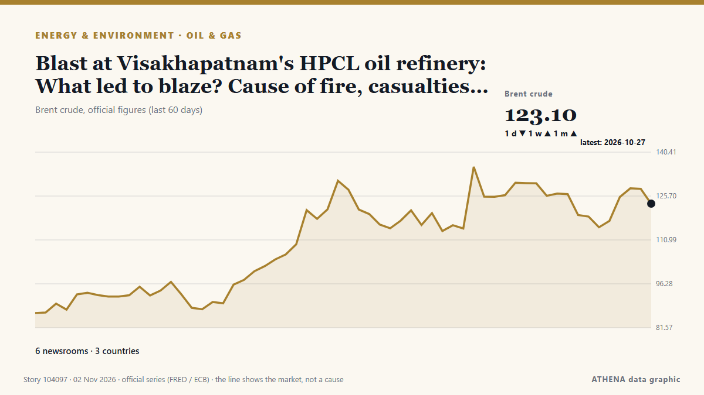

Pétrole et gaz
SponsoriséPrésenté par  Cybernetics and Artificial Intelligence Lab Welcome to the Cybernetics and Artificial Intelligence Laboratory, established at the Department of Business Administration of the National
Cybernetics and Artificial Intelligence Lab Welcome to the Cybernetics and Artificial Intelligence Laboratory, established at the Department of Business Administration of the National
| 20 oct. | 0 |
|---|---|
| 21 oct. | 0 |
| 22 oct. | 0 |
| 23 oct. | 0 |
| 24 oct. | 0 |
| 25 oct. | 1 |
| 26 oct. | 2 |
| 27 oct. | 0 |
| 28 oct. | 0 |
| 29 oct. | 0 |
| 30 oct. | 2 |
| 31 oct. | 2 |
| 1 nov. | 5 |
| 2 nov. | 11 |
Les titres sont affichés en anglais, tels que publiés.

Blast at Visakhapatnam's HPCL oil refinery: What led to blaze? Cause of fire, casualties - what we know
A major fire broke out at HPCL's Visakhapatnam refinery, triggering explosion rumours. de Livemint
US-backed consortium proposes $4.4bn LNG project
• Proposal envisages four tanks holding 560,000 cubic metres at Port Qasim in first phase of the $4.4bn plan that also includes a 1,100km upcountry gas pipeline • Project would charge $4.93 per mmBtu… de Dawn
UAE condemns attack on Qatar’s LNG carrier in Gulf
Qatar Gas Transport Company says no crew members injured, vessel remains safe and operational following Friday evening incident. de Anadolu Agency (English)
Drones attack Samara oil pumping station in Russia – media
Russia's Samara region came under a drone attack early on November 2. de Ukrinform (English)
Falklands: Argentina's New Legal Dispute Over the Sea Lion Oil Project
The longstanding Argentina-United Kingdom Falkland Islands dispute is back in the global headlines. de The Maritime Executive
Nine big oil firms on track to share more than $95bn profit two quarters in a row
Windfall for oil corporations such Saudi Aramco and BP comes on back of soaring fuel prices driven by Iran war The world’s biggest oil companies are on track to amass profits of more than $95bn… de Guardian Business
World’s energy supply buffers have been eroded, ADNOC CEO says
The world has eroded its supply buffers by draining nearly 1 billion oil barrels from… de BusinessWorld
Goldman Sachs Raises December Brent Oil Price Forecast to $105
Goldman Sachs commodity analysts have revised their price forecast for Brent crude upwards, now expecting the benchmark to average $105 in December and remain elevated next year as well. de OilPrice.com
HUR Confirms Russian Su-57 Explosion at Akhtubinsk Airfield
Ukraine’s military intelligence confirmed a Russian Su-57 stealth fighter jet burned down at the Akhtubinsk airfield on Thursday, attributing it to an engine startup failure due to suspected low jet… de Kyiv Post
Metlen, Shell seal LNG supply deal
Greece’s Metlen Energy & Metals has signed a binding five-year deal to buy liquefied natural gas (LNG) from a unit of UK-based LNG giant Shell. de LNG Prime
Oil prices decline on global markets
The financial performance of the sector is driven by global prices, coal export volumes and fluctuations in the ruble exchange rate, Dmitry Islamov said. de TASS (English)
Brazil Factory Prices Jump 4.34% in a Year
Brazil's producer prices rose 4.34% in the year to September and 1.54% in the month, well above forecasts, a warning for inflation and interest rates. de The Rio Times
Saudi Telecom Companies' Revenues Rise to $22 Billion in 9 Months
Saudi Arabia's crude exports have risen in October compared with September, two of three ship-tracking companies said, despite Iranian attacks on shipping in the… de Maritime Professional
OPEC+ keeps December oil output targets steady ahead of tougher call for 2027
This aligns with expectations that further output policy adjustments will not occur until 2027. de The Business Times
Rig incident: 110 rescued, 5 still missing after Borr Drilling’s jack-up sinks off Gabon coast
The search is ongoing for offshore workers, who remain unaccounted for following a punch-through incident at a 2014-built rig offshore Gabon. de Offshore Energy
US fighter jets carry out airstrikes on Syria’s Homs
TEHRAN, Nov. 01 (MNA) – A media outlet has reported that 'American warplanes struck Homs in Syria’ on Sunday. de Mehr News (English)
Tyrone toddler treated in hospital after being burned by firework
The incident happened in Co Tyrone as fireworks were thrown outside a petrol station. de The Irish News (Belfast)
Russia says drone hit 'industrial enterprise' near Moscow, Kyiv claims hit major refinery
Russia announced that a drone hit an industrial area near Moscow, while Ukraine claimed responsibility for targeting a major refinery in the region. de Arab News
Vietnam cuts gasoline tax to zero, prices fall from November 1
Vietnam has cut the special consumption tax on all types of gasoline to zero from November 1, 2026, bringing down retail gasoline prices as the government seeks to ease costs and curb inflation. de Tuoi Tre News